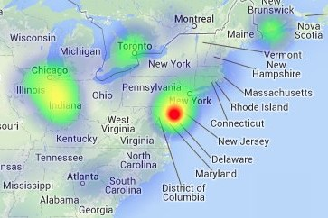

Thematic Mapping
words
Choropleth Map
Pro's
- Popular
- Shows general patterns clearly
- Links variables to locations
- Visually effective
- Levels of shading/color represent a range of values
Con's
- Gives impression of uniform values within sub-areas
- Can only be used for ratio data not absolute values
- Often not suitable for showing total values
- Can be difficult to distinguish between different shades
Well Executed Choropleth

Credit: David Yanofsky
Dot Map
Heat Maps

Another way to visualize point data
Credit: Patrick Wied
Pro's
- Shows density and distribution across a wide area
- Good visual impression of variations
- Can be used for statistical analysis
- Exact data can be shown
- Highlights clustering of data
- Can show absolute values
Con's
- Dot placement may be random
- Areas with no dots may give a false sense of emptiness
- Cannot be used to show data in the form of ratios
- Points may not have a spatial reference
- Subjective decisions made about dot size, dot value, and dot location